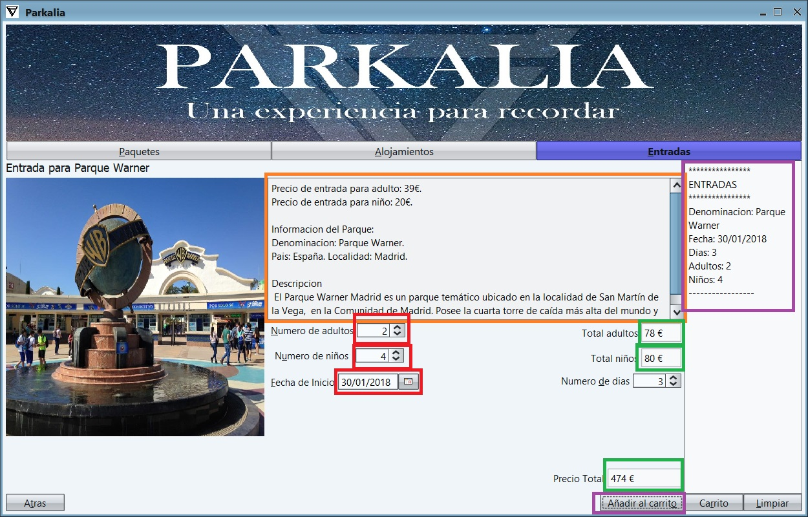

Para hacer una reserva de entradas se seguirian estos pasos:
1- Se arranca la aplicacion y se selecciona el ultimo boton: "Entradas".
2- A continuacion podemos ver la lista de entradas que hay disponibles en el panel central. A la izquierda tenemos varias opciones para filtrar de forma individual: por nombre, por parque o por precio de las entradas. Una vez escogida la entrada que deseamos reservar, hacemos click en el boton ver. Se nos desplegará un nuevo panel.
3- Aqui podemos ver toda la informacion de la entrada y del parque. Para realizar la reserva es necesario rellenar todos los campos de forma correcta: al menos una persona (adulto o niño), una fecha de inicio y el numero de dias (por defecto uno). Segun vamos modificando los datos se van a ir actualizando los precios. Una vez rellenados todos los datos hacemos click en el boton "Añadir al carrito" y ya habremos reservado una entrada. Se puede ver que la entrada se ha añadido a nuestro carrito porque aparecera en el panel de la derecha. Para realizar mas reservas sobre entradas se haria click en el boton "Atras".
